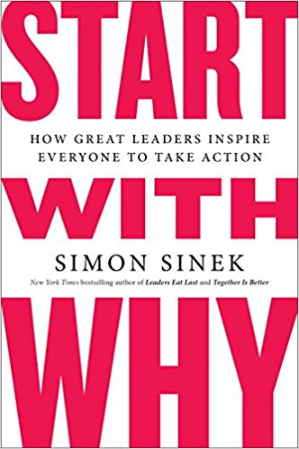

12 Must-Read Books For Business Owners & Entrepreneurs
Whether you’re looking for productivity tips, wondering how to market your business better and persuade your customers more effectively, or you want to improve at hiring and become a more impactful manager, there’s something on this list for you.
With that in mind, here are the 12 titles we’re giving away, along with a brief summary of each.
1. Tools of Titans by Tim Ferriss
Do you want to learn the tips and tricks successful people used to get to where they are? Productivity guru Tim Ferriss’ Tools of Titans may be just the book you’re looking for.
The 673-page tome is mostly a collection of interviews with more than 100 successful folks from all walks of life, all of whom offer up personal productivity advice and other insights about their careers. Tools of Titans is broken into three sections: Healthy, Wealthy, and Wise. In each section, Ferriss’ own tips, routines, and habits are spliced in between interviews.
Learn what people like Arnold Schwarzenegger, writer Maria Popova, LinkedIn CEO Reid Hoffman, and comedian Mike Birbiglia do to stay on top of their games. The author calls the book a “toolkit for changing your life.”
To get the most out of Tools of Titans, Ferriss encourages readers to skip over any interviews they don’t like—so you have the author’s permission to not read the whole thing if you don’t have time to.
2. Mindset: The New Psychology of Success by Dr. Carol Dweck
Are you the kind of person who’s content with your skills or resistant to change? Do you think your business does what it does and there’s no possibility you’d succeed if you tried something entirely different?
If so, you might find it liberating to learn that you do have the power to change these perceptions.
Dr. Carol Dweck, Ph.D., is a professor at Stanford who’s the pioneer of mindset research; she’s been studying the power of mindset for decades.
She argues that our mindset dictates our behavior. It’s our way of thinking about ourselves and the world that governs the way we act.
Dweck argues there are two kinds of mindsets:
- A fixed mindset tells us intelligence is something we’re born with. We’re dealt a certain hand and there’s nothing we can do to change it.
- A growth mindset says we can improve ourselves every day. Maybe you’re an incredibly talented violinist, but that doesn’t mean you can’t learn how to write transformative computer code that powers spacecraft. We all have the ability to become better and better.
In Mindset: The New Psychology of Success, Dweck chronicles her extensive mindset research and leaves readers with a simple yet incredibly powerful takeaway: The way we think about our lives—whether it’s work or school or personal relationships—plays an enormous role in the outcomes we experience.
Business success, per Dweck, starts with having the right outlook on our capabilities, which is made possible with a growth mindset. We need to accept we’re not perfect and we need to strive to consistently improve. It’s all possible so long as our brains tell us we actually want to.
Read the book to find out what you can do to adopt a growth mindset—or, if you’re already there, use it to reach your full potential.
3. Influence: The Psychology of Persuasion by Dr. Robert Cialdini
What makes people say yes? If you knew the answer to that question, wouldn’t it be easier to sell to customers?
Dr. Robert Cialdini’s Influence is a modern classic that small business owners and marketers have been leveraging more than 30 years. The book teaches the six universal principles of persuasion, according to Cialdini, how you can use those to influence customer behavior, and what you can do to protect yourself from being subconsciously persuaded.
While you’re at it, check out Cialdini’s follow-up book, Pre-Suasion, which explores what you can do to prime your audience so they’re more susceptible to your persuasion when the messages arrives.
4. The Art of War by Sun Tzu
Written around 500 B.C., Sun Tzu’s The Art of War is a timeless book on military strategy that remains surprisingly relevant today—not just on the battlefield, but also in the business world.
The book is divided into 13 short chapters, each which explores a different facet of warfare. While you might want to skip over the chapter on terrain if you’re in a pinch for time, there are several lessons in the book that you’ll definitely want to read—and it won’t take that long, either.
For example, Sun Tzu recommends keeping your plans secret. If your enemy (i.e., your competitor) knows what you’re doing before you’ve actually done it, you’ll be easier to defeat. What might that mean for your business? You might not want to broadcast a game-changing new product or service until you’re ready to roll it out.
Sun Tzu also recommends building a team full of talented people and training and treating them well—advice you can apply to your small business right now.
5. The E-Myth Revisited: Why Most Businesses Don’t Work and What to Do About It by Michael E. Gerber
Eighty percent of small businesses fail. A big reason for that is that being incredibly proficient in a craft is not the same thing as running a business. You may be one of the most skilled people in your industry, but that doesn’t necessarily mean you’ll be able to build a successful company.
Originally published in 1988, The E-Myth Revisited is an updated entrepreneurial guidebook written by Michael Gerber that explores why so many small businesses fail and gives entrepreneurs tips on how they can avoid suffering a similar fate.
For Gerber, small business success requires a delicate balance of three distinct personalities: the technician (i.e., someone who’s an expert), the entrepreneur (i.e. the big picture thinker), and the manager (i.e., the one who’s focused on the details).
All small business owners possess each of these three skill sets; building a successful company starts with leveraging all of them. Successful companies are also built on repeatable processes (more so than great products) and proven business models.
How do your managerial style and business foundations stack up?
6. The Effective Executive by Peter F. Drucker
Would you use the word “effective” to describe your managerial style? If not, or if you’re not sure, you need to read Peter Drucker’s 1967 classic The Effective Executive.
To thrive as a leader, executives need to figure out how to get the right things done. For Drucker, effective executives have great time management skills. They’re also able to work productively while delegating tasks to the best people. Effective executives prioritize and make the right decisions at the right times.
If that doesn’t sound like your managerial style, don’t sweat it—Drucker says effectiveness can be learned. Pick up this classic management book to find out how.

7. Start with Why: How Great Leaders Inspire Everyone to Take Action by Simon Sinek
Do you want to be a leader who inspires your team? If you’re struggling to get there, it may be because you’re focusing on the wrong question.
Simon Sinek’s Start with Why examines how the world’s most successful companies (e.g., Apple) got to where they are. Sinek posits that it’s not by chance but rather due to the fact that these businesses were created for a specific purpose (the why) that’s greater than a simple product.
Apple employees, for example, are inspired by the opportunity to create game-changing products that improve the lives of countless customers around the world. Compare this to companies that started by answering the question what, i.e., which particular products or services will be offered, and how those products or services will be built and delivered.
Why does your business exist? Successful businesses, per Sinek, are inspired by a sense of purpose and meaning (the why) and work backward to figure out the how and the what. It may seem a little counterintuitive, but if you have visions of growing your small business into a large one—or at least a more successful one—you may want to meditate on Sinek’s advice.
8. The Creative Habit: Learn It and Use It for Life by Twyla Tharp
Successful entrepreneurs are creative by design.
Business owners, for example, need to get creative when the unpredictable happens—like the time your biggest client suddenly announces they’re not going to renew their contract for whatever reason.
In The Creative Habit: Learn It and Use It for Life, Twyla Tharp—one of America’s most well-known and successful dancers/choreographers—explains how we can become more creative and use our newfound creativity to do the best work of our lives.
Let her insights into what one of the most talented living dancers has done to harness her creativity and take her craft to the next level inspire your own success.
9. High Output Management by Andrew Grove
Andy Grove, the former chairman and CEO of Intel, knows a thing or two about management.
High Output Management, written in 1995, is Grove’s highly regarded guide small business owners have relied on for two-plus decades to become better managers and help their companies get more done more effectively.
Some highlights from this popular book include:
- Don’t underestimate the importance of process. Successful companies are built on a foundation of repeatable processes. Everything from creating code to writing a blog to filling out a spreadsheet should be repeatable.
- Don’t meet for the sake of meeting. All of your meetings should have a purpose. Otherwise, you’re wasting time and money.
- Don’t underestimate the power of a proper performance review. Use performance reviews to actually improve performance by focusing on the important things and ignoring the unimportant things.
- Don’t try to do everything yourself. Successful managers know how to delegate effectively.
10. How to Win Friends and Influence People by Dale Carnegie
Dale Carnegie’s How to Win Friends and Influence People is a time-tested classic that’s sold more than 30 million copies since it was released in 1936—making it one of the best-selling books of all time.
Once a successful salesman, Carnegie eventually left his sales career and took up public speaking, and the advice from his seminars was compiled into this book. Read it and learn how to get people to like you, how to convince others that your reasoning is the right way of looking at an issue, and how to change folks without them hating you for it.
One important takeaway from the book? If you want to change someone, avoid criticizing them. Criticism is often met with force; criticize someone and they’re likely to think worse of you and listen to you less.
11. Impossible to Ignore by Dr. Carmen Simon
Written by cognitive scientist Dr. Carmen Simon, Impossible to Ignore explores what we can do to influence people in today’s fast-paced world that exposes us to countless messages every day—or even every minute.
Generally speaking, your small business’ audience will forget 90% of your messaging. In order to succeed, you need to cut through the noise and make sure that your key messages hit home—and stay there.
Inspiring future action starts with creating lasting memories that will live in your audience’s mind long after you’re done speaking or they’re done reading a blog post or watching a video. To do this, Dr. Simon suggests leveraging 15 variables that can influence memory—like context, emotion, repetition, cues, and surprise.
Pick up the book to learn how your small business can create lasting memories for your audience—persuading them to act as you want them to act at a future date.
12. Guerilla Marketing by Jay Conrad Levinson
Originally published in 1983, Guerilla Marketing is filled with a wealth of real-world tips and tricks small business owners can use to take their marketing game to the next level.
Whereas traditional marketing wisdom used to suggest big budgets and lots of resources are requisites for success, author Jay Conrad Levinson thinks otherwise: Every time your small business interacts with anyone outside of your company is an opportunity to market your products and services.
For Levinson, effective marketing doesn’t necessarily require tons of money. It does, however, require significant amounts of time and a bit of cunning.
Instead of buying expensive ads in a newspaper or magazine—or even online—devise a clever PR stunt for your small business to get coverage for free. For example, if you’re opening up a new landscaping business, hire a juggler, head to the busy part of town and give out swag (e.g., T-shirts) and coupons to whoever’s around. Similarly, instead of trying to get new people to buy your products with a well-designed ad or banner, give them away for free to generate interest.
Bottom line? What worked for small businesses 30 years ago no longer applies. A little creativity and a willingness to invest your time in unconventional marketing endeavors can go a long way toward the success of your small business.
Ready for more?
Apply for funding and find out if you qualify today